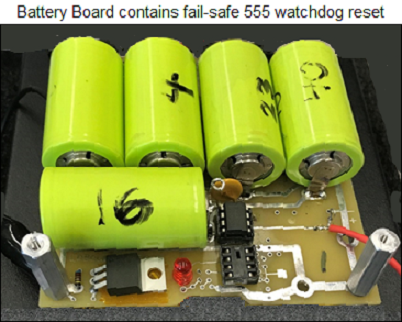
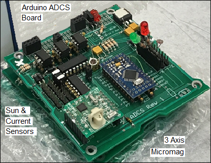
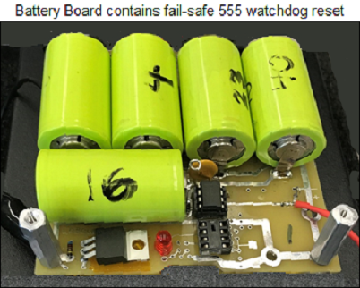
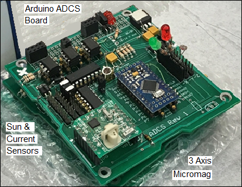
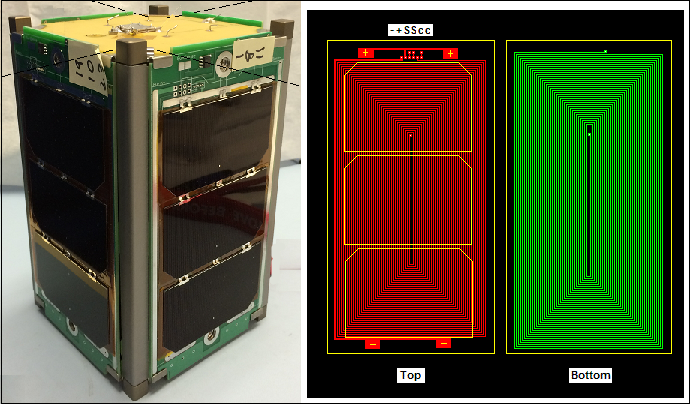

.
 .

.
 .

 OVERVIEW: . Our student satellites are undergraduate senior engineering projects to give the students hand's on experience in their Aerospace major. All engineering students complete a capstone project in their major. Eighty Five percent (85%) of the EE, Systems and IT projects involve wireless spectrum under the FCC rules and some Astro student projects result in viable spacecraft (cuebsats) that are designed to operate in the Amateur Satelite Service. As such, these cubesats need to be low cost and hence this SATT4 low cost approach. Shown above are the SATT4 board and the matching 7 volt 1800 mAh battery board and Arduino based Attitude Dynamics and Control (ADCS) board.
Battery Board: To avoid the safety issues and critical charging and discharging requirements for modern LiPo batteries which require individual Baterry Management Systems (BMS) on each LiPo cell, we use NiCd batteries. These have 60 years of space heritage, require no BMS, and can be over dischaged and overcharged by more than 10% indefinitely with no ill effects. We use the large 1800 mAh cells because they can absorb any overcharge that might occur from a cubesat size solar panel giving us a completely safe passive charging design while also providing 12 Whrs of energy storage operating at a bus voltage between 6-7 volts. Further, there is a current sensor for battery current and a 555 watchdog timer that must receive a repetiting heartbeat from the spacecraft CPU or it will time out after 90 seconds and reboot the power to all systems on the 5v bus.
ADCS Board: The ADCS board is laid out to hold either an Arduino mini-pro processor or a Parallax Basic Stamp CPU. The board also contains six current sensors for the six solar panels and 6 channels for photo-resistor sun sensors. It also contains a 3 axis Micromag-3 magnetometer. All of the solar panels plug into header pins on this board which is usually the top board in the stack.
Solar Panels: The solar panel connects to the ADCS board with an 8 pin connector that not only provides, power but also a sun sensor, a temperature sensor and torque coil connections for the torque coils on the front and back of each panel. Combined in series with the pair on the opposite face, this give 4 coils in series which is a perfect impedance match with the 30 mA current direct drive capability of a 5 volt Arduino or BS2 I/O pin. This greatly simplifes the ADCS hardware design. A final pin feeds to a Burn-resistor trace that goes all around the panel so that the future antenna release burn resistor can be placed at dozens of locations on any panel making the final antenna release design flexible enough to meet the final flight requirements.
Every new project based on this board adds to the existing on-orbit constellation of amateur radio experimenter relay sateliltes pioneered with the original PCsat in 2001 and our most recent PSAT-1(2015) missions noted above containing an APRS packet radio communications transponder for relaying remote telemetry, sensor and user data from remote users and amateur radio experiments or other data sources back to Amateur Radio experimenters via a global network of internet linked volunteer ground stations. The APRS transponder also includes telemetry, and some command and control for the user modes.
 Operations under ITU Rules: These SATT4 cubesats can operate under the ITU rules of the Amateur Satellite Service as long as the mission meets the rules. This means, no pecuniary interest, no externally funded research, no benefit to anyone other than amateur radio experimenters learning about the radio art. A perfect match for undergraduate stuednt engineering projects. See how our PSAT-2 design and operation fit entirely within the ITU International Amateur Radio
RULES. The FCC does not issue
licenses for Amateur Radio Spacecraft
(see public notice) because they are operated under the
license of the individual amateur radio operator who is responsible to assure
that both the design and operation are within the rules of the ITU as interpreted by the IARU. Our licensed control operator is Todd Bruner, WB1HAI in Annapolis, and Rick Hambley, W2GPS.
Operations under ITU Rules: These SATT4 cubesats can operate under the ITU rules of the Amateur Satellite Service as long as the mission meets the rules. This means, no pecuniary interest, no externally funded research, no benefit to anyone other than amateur radio experimenters learning about the radio art. A perfect match for undergraduate stuednt engineering projects. See how our PSAT-2 design and operation fit entirely within the ITU International Amateur Radio
RULES. The FCC does not issue
licenses for Amateur Radio Spacecraft
(see public notice) because they are operated under the
license of the individual amateur radio operator who is responsible to assure
that both the design and operation are within the rules of the ITU as interpreted by the IARU. Our licensed control operator is Todd Bruner, WB1HAI in Annapolis, and Rick Hambley, W2GPS.
APRS Up/Downlink . . 145.825 1200 baud APRS (shared with ISS, PCSAT, UO11 and others!)
9600 bd Downlink . . 435.350 MHz +/- 5 kHz FM (300 mw) if used
. . .
SATT4 Digipeater Aliases: To join the existing APRS satellites on orbit and operate as a seamless constellation, PSAT-2 supports the same APRSAT and ARISS generic aliases as the original PCSAT (NO44) PSAT-1 and the packet system on the ISS so that users do not have to change any parameters when using any of these three APRS transponders.
APRS Digipeater: When the DIGI is on, the satellite TOCALL is APRSON. When it is off for user digipeating the TOCALL is APOFF. The digipeating ALIASes are the usual, ARISS, APRSAT (and WIDEn-N if you forget).
LIVE Telemetry Downlink: will also be captured on Steve Dimse's, K4HG original pcsat.findu.com web page. APRS packet is a secondary mission compared to DTMF and PSK31, so the digipeater may be turned off if power is low. But beacons, telemetry and Bulletins will always remain. The five Telemetry Equations (after the serial number) in standard APRS telemetry format are:
Format: . . . . . T#SSS, VVV, I I I, XXX, YYY, ZZZ, 00011X00
VVV. . . Bus Volts in hundredths
I I I . . . . Bus Current in mA
XXX. . . Temp +Z where T = -1.26E-6*X^3 +0.0028*X^2 -2.215*X + 625
YYY. . . Temp - Z where T = -1.26E-6*X^3 +0.0028*X^2 -2.215*X + 625
ZZZ . . . TempBat where T = -2.57E-6*X^3 +0.0061*X^2 -5.149*X +1475
In the 00011X00 field, only the X has meaning. 0 = DIGI ON, and 1 = Digi off

Worldwide APRS Ground Station IGates: Although almost all of the dozens of 145.825 MHz APRS-IS (internet system) ground stations can hear the ISS downlink with simple antennas, the map above shows the fewer ground stations that have actually IGated PSAT packets. Although these are the same stations listening to 145.825 as the ISS, the ISS station is 14 dB stronger (10W versus 0.35W for PSAT). So only IGates with good weak signal performace are successful with PSAT. As you can see, we need IGates in Hawaii, India, China and the Southern Hemisphere. PSAT-2 will operate at 2 Watts and be 7 dB stronger than PSAT-1.


Best Satellite IGATE Antenna: The most practical IGate antenna is an OMNI (so it does not wear out or require rotators) and it has high gain above about 30 degrees and less gain on the horizon (where it cannot hear a 350 mW satellite anyway). See (SatGate Antennas) Not only is the gain higher at the higher elevations, but the satellite is also 6dB closer, thus giving a combined gain of nearly 13 dBi similar to an OSCAR class beam. Another reason for minimizing gain on the horizon is the Donut-Hole NULL effect where any IGate that hears a user station direct will send that into the APRS-IS first and that will cause the subsequent space digipeated packet to be a DUPE and will be ignored by all IGates. So a mobile or terrestrial omni is the worst omni (maximizes gain on horizon and usually has a null around 20 or 30 degrees which is where the satellite is best located!
The best Satellite OMNI Igate antenna is a non-gain 1/4 wave vertical (19.5" over a large ground plane). Even better (+2 dB) is a 3/4 wave vertical (58" high) over a large ground plane shown here. It has nearly 7 dBi gain above 30 degrees, plus the +6 dBi closer range gain and not much at all on the horizon. It is best placed low in the yard to further minimize horizon gain as shown here.
 BACKGROUND: . PSAT-2 follows on to several previous student project satellites
which contain an APRS packet radio communications transponder for relaying remote telemetry,
sensor and user data
from remote users and amateur radio environmental experiments or other data sources back to
Amateur Radio experimenters via a global network
of internet linked volunteer ground stations. The data transponder also includes all
telemetry, command and control for a complete cubesat. A secondary transponder supports multi-user PSK31 text messaging users via a Brno University transponder.
BACKGROUND: . PSAT-2 follows on to several previous student project satellites
which contain an APRS packet radio communications transponder for relaying remote telemetry,
sensor and user data
from remote users and amateur radio environmental experiments or other data sources back to
Amateur Radio experimenters via a global network
of internet linked volunteer ground stations. The data transponder also includes all
telemetry, command and control for a complete cubesat. A secondary transponder supports multi-user PSK31 text messaging users via a Brno University transponder.
See the
Psat paper at the 2010 AMSAT symposium
The image at right is the test equipment used during integration testing of PSAT-1.
Operations in the Amateur Satellite Service: All of the transponders on PSAT are operated in the Amateur Satellite Service to encourage amateur radio students, educators and experimenters around the world to contribute additional satellities to this constellation on 145.825 MHz or to build interesting self motivated remote sensors suitable for the uplink channel. See our ocean or bay oceanographic data buoys for examples. This kind of Amateur Radio experimentation fits well in the ITU rules (see PSAT-2 justification) for operating in this service and well serve our educational and outreach goals for student projects encouraging young people to be interested in Science, Technology, Engineering and Math.
APRS Packet Transponder: The APRS packet transponder is an AX.25 Packet Radio Relay similar to what is flying on PCsat and the ISS. This ongoing mission in space on the original PCsat is now over 12 years old and pioneered this very popular operating mode via the ISS since 2006. Both of these missions deliver packets to users worldwide via the global network of volunteer ground stations feeding the two downlink capture pages: psat.aprs.org and ariss.net. These pages display live maps such as the one below, of the most recent user position data and capture all message traffic between users. See the APRS link budgets. In addition there is also a PSK31 transponder as noted below.
Attitude Dynamics and Control System (ADCS): To maintain a very slight spin about the Z axis the solar cells are offset with a reflective strip on one edge to produce an unbalanced solar radiation pressure on each side. This should create a fractional RPM spin (the Spin on PCsat now, 12 years in orbit is maintained between about 0.6 and 0.8 RPM by this method). And PSAT-1 typically spins between 1 and 5 RPM with this method. The spin is needed to maintain thermal balance and not let one side get too hot facing the Sun.
Global Experimental Data Channel: PSAT is the space segment of this initiative to encourage both new satellite construction in support of this experimental data channel and lower cost buoy and sensor experimentation at other schools as shown below. Today, the only AMSAT that is available for no cost to schools with such experiments are the Naval Academy's PCSATs. But with ParkinsonSAT we hope to commence an ongoing full time presence in space to continue this support of the 145.825 data uplink channel for future experiments. To this end we hope other schools to either build additional 145.825 MHz relay satellites and/or to build experimental sensors. The complete comms system including data transponder fits on one 3.4 inch square card shown here. We hope that ParkinsonSAT will be the Egg in this chicken-egg conundrum.
The 2016 Initial Design: Below will be the more descriptive images and links to the details of PSAT-2 design. But until we finish the new cubesat-standard-bus design for PSAT-2, we are retaining some of the olderlinks to the portions of the original PSAT-1 design that are similar.
{kind=link}
{kind=link}
{kind=link}
{kind=link}
{kind=link}
{kind=link}
{kind=link}
{kind=link}
{kind=link}
{kind=link}